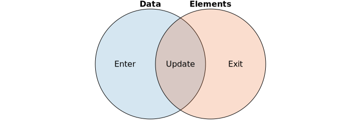
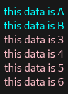
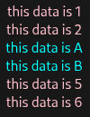

D3 Selection 解释
Table of Contents
这篇文章是 2023 年使用 D3.js 和 Drage-d3 做可视化项目时的学习笔记补完版.
在初学 D3.js 时最难以让人理解的就是它的选中功能:
Selection.enter() 和 Selection.exit() 到底代表什么, 它的返回结果又是怎么确定.
由于选中功能是整个 D3.js 的基础, 所以对选中功能的含糊理解是不可容忍的.
1. Selection.enter() 和 Selection.exit() 的解释
Selection.enter() 方法和 Selection.exit() 方法的文档并不能清楚地解释它们的作用,
其实换个角度, 从集合论的角度去理解会变得十分容易.
这里先给出一段代码,
const Data = [/* xxx */] const key = (d, index, group, dom) => { return /* something to be assigned to dom.__data__ */ } const Elements = d3.selectAll('sth') const Update = Elements.data(Data, key) const Enter = Update.enter() const Exit = Update.exit()
selectAll() 返回的结果 Elements 是 DOM 元素集合, 用 \(E\) 表示;
Elements.data(Data, key) 方法的参数 Data 为数据元素集合, 用 \(D\) 表示;
Update 结构如下:
{
_enter: [/* xxx */],
_exit: [/* xxx */]
_groups: [/* xxx */],
_parents: [/* xxx */]
}
它比一般的 Selection 对象（可以参考 Elements) 多出 _enter 和 _exit 两个字段,
Update._enter 是 \(D\) 中存在但 \(E\) 中不存在的元素集合, 也就是 \(D - E\),
该集合的元素是新增元素的占位符: EnterNode 对象;
Update._exit 是 \(E\) 中存在但 \(D\) 中不存在的元素集合, 也就是 \(E - D\),
该集合的元素是将被移除的 DOM 元素;
Update._enter 和 Update._exit 字段还不是 Selection 对象,
所以需要 Update.enter() 方法和 Update.exit() 方法把它们转换成 Selection 对象,
接下来会把这两个 Selection 分别称为 Enter 集合和 Exit 集合.
实际上 Update 本身也是一个虚拟的集合, 包含了既不属于 Enter 也不属于 Exit 的元素集合,
也就是 \(D\) 和 \(E\) 的交集: \(D \cap E\), 该集合的元素是可更新的 DOM 元素.
Update 集合, Enter 集合和 Exit 集合这三者的关系如下文恩图所示:

Update._groups 其实就包含了 Update 集合的元素, 也可能包含一些空元素, 这些空元素是 Enter 集合元素的占位,
像 Selection.append, Selection.attr 这种操作选中元素的方法, 它们内部的操作对象就是 Selection._groups 字段,
这些方法的主体就是一个遍历 Selection._groups 的循环, 只对非空元素做处理:
// d3-selection/src/selection/each.js // 来源于源代码: https://github.com/d3/d3-selection/blob/main/src/selection/each.js export default function(callback) { for (var groups = this._groups, j = 0, m = groups.length; j < m; ++j) { for (var group = groups[j], i = 0, n = group.length, node; i < n; ++i) { // 只有 node 为非空元素才调用 callback if (node = group[i]) callback.call(node, node.__data__, i, group); } } return this; }
这个方法在类似 Selection.attr 这种方法中被广泛使用, 可以说得上这类方法的处理逻辑代表.
2. D3.js 如何划分元素到对应集合
DOM 元素和数据元素不是同一个类型, 那么 D3.js 是如何判断 \(D\) 和 \(E\) 两个集合的元素是否同一个呢?
默认情况下, 会按照索引进行比对, 比如说 \(E[i]\) 和 \(D[i]\) 同时存在,
那么 \(E[i]\) 和 \(D[i]\) 会被认为是同一个元素, \(D[i]\) 会被绑定到 \(E[i]\) 的 __data__ 属性上, 并把 \(E[i]\) 划入 Update 集合中;
如果 \(E[i]\) 存在, 但 \(D[i]\) 不存在, 那么 \(E[i]\) 会被划分到 Exit 集合中;
如果 \(E[i]\) 不存在, 但 \(D[i]\) 存在, 那么会创建一个占位符元素 \(E[i]\) 并把 \(D[i]\) 绑定到它的 __data__ 属性上, 再把 \(E[i]\) 划入 Enter 集合中.
\(E[i]\) 的 __data__ 可用在后续的渲染上, 对于 Update 集合的元素而言就是更新的数据源.
索引比较法依赖于数据的排序, 如果数据的排序不稳定, 那么应该为每个元素赋予唯一标识, 通过标识进行比对,
Elements.data 的参数 key 是一个返回字符串的函数, 该函数以 \(D[i]\) 为主要参数, 用于计算出字符串,
这个字符串用来作为 \(E[i]\) 的唯一标识, 只要 \(E[i]\) 和 \(D[i]\) 的标识一致就可认为两者是同一个元素.
先来观察 索引比较法:
let svg = d3.select('.svg-container') .append('svg') .attr('width', 500) .attr('height', 500) .append('text') // 先创建两个 tspan svg.selectAll('tspan') .data([{ id: 2, value: 'A' }, { id: 3, value: 'B' }]) .enter() .append('tspan') .attr('text-anchor', 'middle') .attr('x', 50) .attr('dy', 20) .text(function(d) { return 'this data is ' + d.value }) // 再尝试创建六个 tspan svg.selectAll('tspan') .data([{ id: 0, value: '1' }, { id: 1, value: '2' }, { id: 2, value: '3' }, { id: 3, value: '4' }, { id: 4, value: '5' }, { id: 5, value: '6' }]) .attr('fill', 'cyan') // 对 Update 集合的元素设置青蓝色 // .text(function(d) { return 'this data is ' + d.value }) .enter() // 获取 Enter 集合的元素 .append('tspan') .attr('fill', 'pink') // 对 Enter 集合的元素设置粉色 .attr('text-anchor', 'middle') .attr('x', 50) .attr('dy', 20) .text(function(d) { return 'this data is ' + d.value })

Figure 1: 索引比较 - 运行结果
<svg width="500" height="500"> <text> <tspan text-anchor="middle" x="50" dy="20" fill="cyan">this data is A</tspan> <tspan text-anchor="middle" x="50" dy="20" fill="cyan">this data is B</tspan> <tspan fill="pink" text-anchor="middle" x="50" dy="20">this data is 3</tspan> <tspan fill="pink" text-anchor="middle" x="50" dy="20">this data is 4</tspan> <tspan fill="pink" text-anchor="middle" x="50" dy="20">this data is 5</tspan> <tspan fill="pink" text-anchor="middle" x="50" dy="20">this data is 6</tspan> </text> </svg>
正如结果显示, 第二次创建的 tspan 中只有后面四个插入进去了,
因为第一次创建的 tspan 对于第二次绑定的数据而言是属于 Update 集合, 所以前者没有被覆盖.
另外, 可以把被注释掉的代码恢复出来, 使用 Update 集合的数据更新文本.
接下来看一下 标识比较法:
let svg = d3.select('.svg-container') .append('svg') .attr('width', 500) .attr('height', 500) .append('text') /* 根据数据计算出标识, 返回值通常是字符串, 如果不是字符串, 内部会把返回值转换成字符串, 应该尽量按照文档要求返回字符串 */ const keyFunc = (d) => d.id // 先创建两个 tspan svg.selectAll('tspan') .data([{ id: 2, value: 'A' }, { id: 3, value: 'B' }], keyFunc) .enter() .append('tspan') .attr('text-anchor', 'middle') .attr('x', 50) .attr('dy', 20) .text(function(d) { return 'this data is ' + d.value }) // 再尝试创建六个 tspan svg.selectAll('tspan') .data([{ id: 0, value: '1' }, { id: 1, value: '2' }, { id: 2, value: '3' }, { id: 3, value: '4' }, { id: 4, value: '5' }, { id: 5, value: '6' }], keyFunc) .attr('fill', 'cyan') // 对 Update 集合的元素设置青蓝色 // .text(function(d) { return 'this data is ' + d.value }) .enter() // 获取 Enter 集合的元素 .append('tspan') .attr('fill', 'pink') // 对 Enter 集合的元素设置粉色 .attr('text-anchor', 'middle') .attr('x', 50) .attr('dy', 20) .text(function(d) { return 'this data is ' + d.value })

Figure 2: 标识比较 - 运行结果
<svg width="500" height="500"> <text> <tspan fill="pink" text-anchor="middle" x="50" dy="20">this data is 1</tspan> <tspan fill="pink" text-anchor="middle" x="50" dy="20">this data is 2</tspan> <tspan text-anchor="middle" x="50" dy="20" fill="cyan">this data is A</tspan> <tspan text-anchor="middle" x="50" dy="20" fill="cyan">this data is B</tspan> <tspan fill="pink" text-anchor="middle" x="50" dy="20">this data is 5</tspan> <tspan fill="pink" text-anchor="middle" x="50" dy="20">this data is 6</tspan> </text> </svg>
正如结果所示, 这次的 Update 集合元素是第三和第四个 tspan, 因为是通过 id 来进行比较的.
在实际开发中应尽可能避免索引比较.
3. D3.js 的通常更新模式
这里基于上面的标识比较法例程作为演示, 完整展示在日常开发中如何更新图表:
let svg = d3.select('.svg-container') .append('svg') .attr('width', 500) .attr('height', 500) .append('text') const keyFunc = (d) => d.id // 旧图表 svg.selectAll('tspan') .data([{ id: 2, value: 'A' }, { id: 3, value: 'B' }], keyFunc) .enter() .append('tspan') .attr('text-anchor', 'middle') .attr('x', 50) .attr('dy', 20) .text(function(d) { return 'this data is ' + d.value }) // 新图表 // 1. 获取 Update 集合 const update = svg.selectAll('tspan') .data([{ id: 0, value: '1' }, { id: 1, value: '2' }, { id: 2, value: '3' }, { id: 3, value: '4' }, { id: 4, value: '5' }, { id: 5, value: '6' }], keyFunc) update .attr('fill', 'cyan') // 针对 Update 集合的元素进行调整 .enter() // 2. 获取 Enter 集合 .append('tspan') // 根据 Enter 集合创建元素 .attr('fill', 'pink') // 针对 Enter 集合的元素进行调整 .attr('text-anchor', 'middle') .attr('x', 50) .attr('dy', 20) .merge(update) // 3. 合并 Enter 集合与 Update 集合 .text(function(d) { return 'this data is ' + d.value }) // 对新集合进行统一调整 update.exit().remove() // 4. 从画布上移除 Exit 集合里的元素
在 D3.js 的 v5+ 版本中, 可以使用 Selection.join() 方法简化上面的更新过程:
let svg = d3.select('.svg-container') .append('svg') .attr('width', 500) .attr('height', 500) .append('text') const keyFunc = (d) => d.id // 旧图表 svg.selectAll('tspan') .data([{ id: 2, value: 'A' }, { id: 3, value: 'B' }], keyFunc) .enter() .append('tspan') .attr('text-anchor', 'middle') .attr('x', 50) .attr('dy', 20) .text(function(d) { return 'this data is ' + d.value }) // 新图表 svg.selectAll('tspan') .data([{ id: 0, value: '1' }, { id: 1, value: '2' }, { id: 2, value: '3' }, { id: 3, value: '4' }, { id: 4, value: '5' }, { id: 5, value: '6' }], keyFunc) .join( enter => { // 针对 Update 集合的元素进行调整 return enter .append('tspan') .attr('fill', 'pink') .attr('text-anchor', 'middle') .attr('x', 50) .attr('dy', 20) }, update => { // 针对 Update 集合的元素进行调整 return update.attr('fill', 'cyan') }, exit => { return exit.remove() // 从画布上移除 Exit 集合里的元素 } ) .text(function(d) { return 'this data is ' + d.value }) // 对元素进行统一调整
可以看到 Selection.join() 方法把对于三个集合的操作集成在一起了, 每个集合的操作是一个函数, 代码逻辑更加清晰了.
这里面只有 Enter 集合的操作函数是必要参数, Update 和 Exit 集合的操作参数是可选的,
默认情况下 Update 和 Exit 集合的操作是:
update => update exit => exit.remove()
鉴于 Selection.join() 方法的用法十分灵活, 这里就不覆盖所有细节了, 就请自行阅读文档.